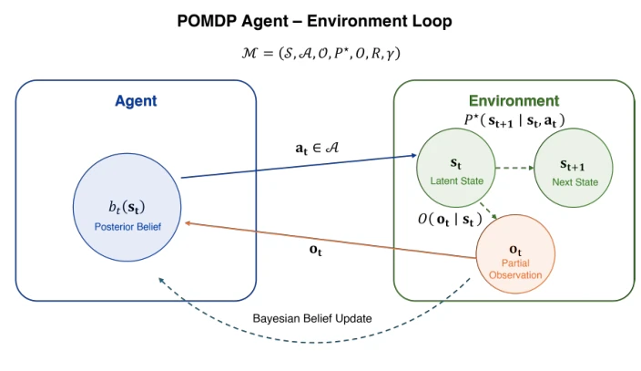
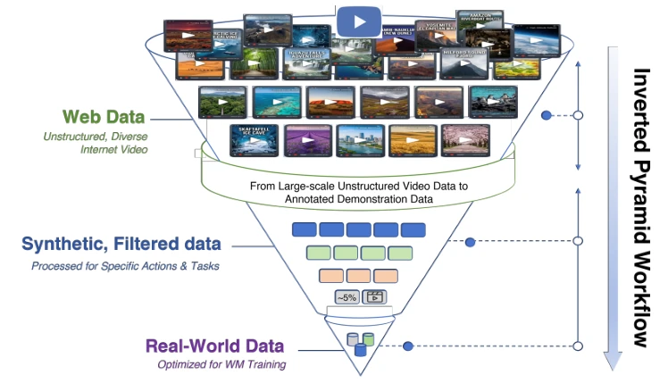
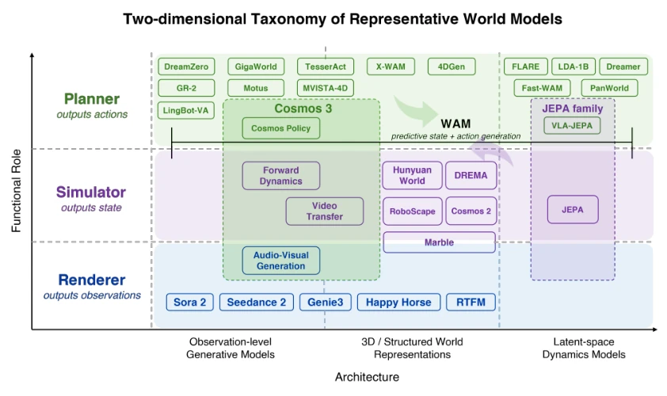
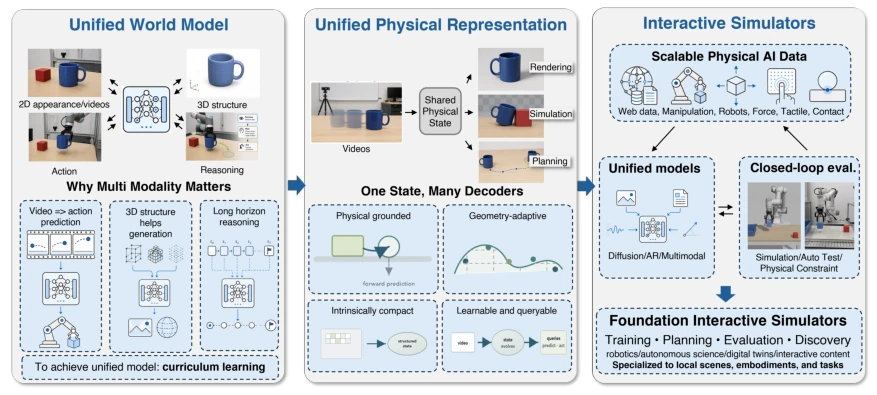
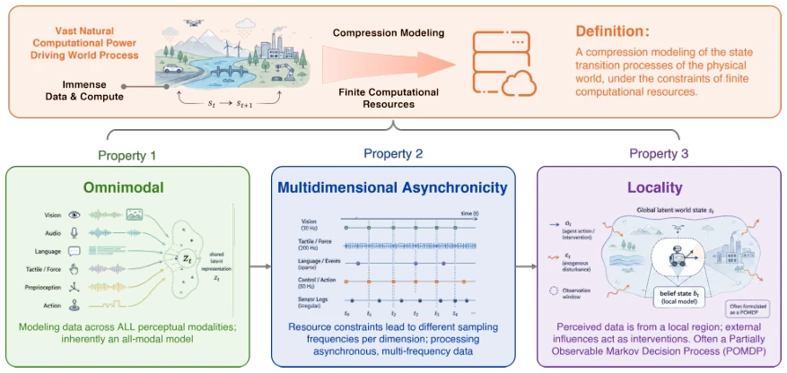
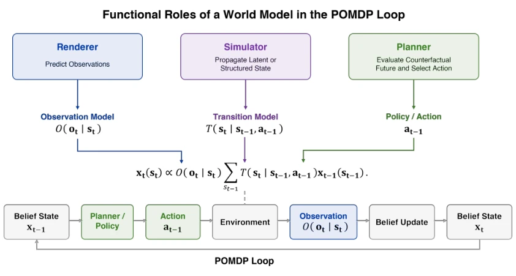
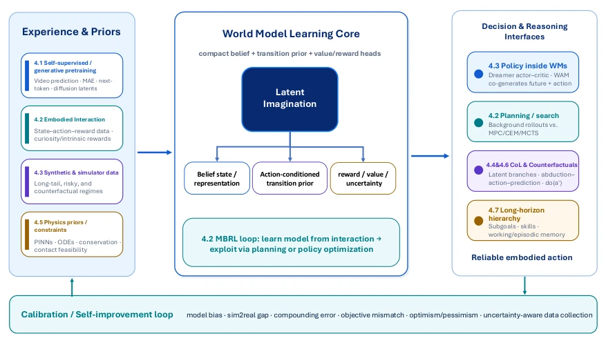
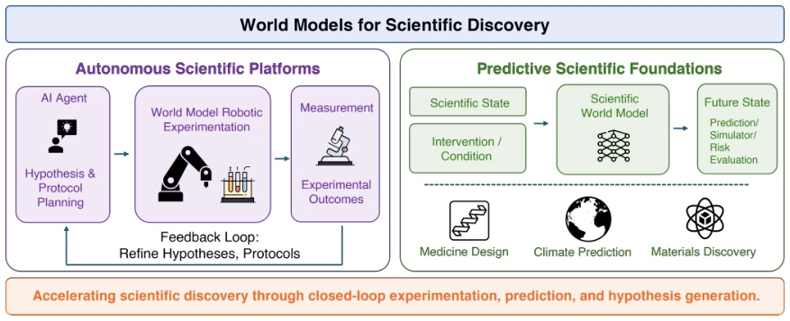
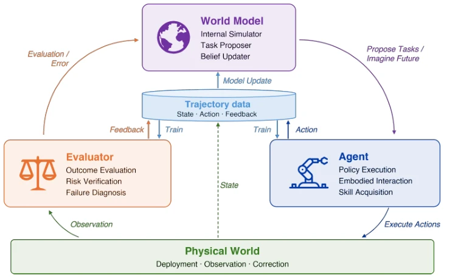

这篇论文与其说是技术报告，不如说是给混乱的 World Model 圈发的一封“正名书”。作者试图用“压缩”定义统一概念，吐槽现有工作要么只懂生成不懂物理，要么只懂预测不懂理解。分类学（Taxonomy）画饼画得挺圆，但 Roadmap 更像愿景而非工程指南。优点是把概念理清楚了，缺点除了 PPT 没给新代码，属于“理论上的巨人，实验上的矮子”。对于 Embodied AI 来说，它强调了数据多样性决定泛化上限，这点很实在，但具体怎么从互联网视频里“蒸馏”出物理先验，文中更多是定性描述而非定量证明。总的来说，这是一篇适合用来写综述引言的“地图”，但别指望能直接拿来跑代码。
This paper is less of a technical report and more of a 'letter of justification' sent to the chaotic World Model community. The authors attempt to define a unified concept using 'compression', criticizing existing work as either knowing generation but not physics, or prediction but not understanding. The Taxonomy (Classification) is drawn quite comprehensively, but the Roadmap is more of a vision than an engineering guide. The advantage lies in clarifying the concepts; the disadvantage is that besides the PPT, no new code was provided, belonging to 'giants in theory, dwarfs in experiment'. For Embodied AI, it emphasizes that data diversity determines the generalization ceiling, which is very practical, but how to 'distill' physical priors from internet videos is more qualitative description than quantitative proof in the text. Overall, this is a 'map' suitable for writing a review introduction, but do not expect to be able to run the code directly.
研究动机Motivation
World Model 概念泛滥，从 RL 到视频生成都在用，但定义模糊。Fei-Fei 的功能分类只关注输出，未触及内部表示本质。LeCun 的预测观点虽强，但忽略了物理先验的压缩需求。现有工作缺乏统一的数据天花板认知，导致模型泛化受限。例如，Sora 等视频生成模型虽视觉逼真，但物理一致性差；Dreamer 等隐空间模型效率高，但难以直接用于真实机器人。本文旨在解决术语混乱与架构割裂问题，强调数据多样性决定泛化上限。作者指出互联网视频是主要物理数据来源，而机器人数据规模有限，因此需要“倒金字塔”流程来提取先验。这解决了当前具身智能中数据稀缺与物理理解不足的矛盾。
The World Model concept is rampant, used from RL to video generation, but the definition is vague. Fei-Fei's functional classification only focuses on output, not touching the essence of internal representation. LeCun's prediction view, though strong, ignores the compression requirement for physical priors. Existing work lacks a unified understanding of the data ceiling, leading to limited model generalization. For example, video generation models such as Sora are visually realistic but have poor physical consistency; latent space models such as Dreamer are efficient but difficult to use directly for real robots. This paper aims to solve the problems of terminology chaos and architecture fragmentation, emphasizing that data diversity determines the generalization ceiling. The authors point out that internet videos are the main physical data source, while robot data scale is limited, thus requiring an 'inverted pyramid' process to extract priors. This resolves the contradiction of data scarcity and insufficient physical understanding in current Embodied AI.

Figure 3: A schematic of the POMDP agent–environment loop using the notation of this subsection. The agent maintains a posterior belief bt(st), selects an action at, the environment evolves under the true transition kernel P⋆, produces a partial observation ot through the observation model O, and the belief is updated by Bayesian filtering.
方法Method
提出正式定义：世界模型是在有限计算资源下对物理世界状态转移过程的压缩建模。三大属性：全模态、多维异步、局部性。核心方法为“倒金字塔数据工作流”，从互联网视频提取物理先验，经合成过滤到真实任务数据。建立二维分类法：功能轴（渲染器/模拟器/规划器）与架构轴（观测级/隐空间/3D 结构）。强调理解优于预测，需支持反事实推理与物理约束。训练范式涵盖自监督、RL 及物理信息学习。基于 POMDP 框架，世界模型作为内部信念更新机制，通过贝叶斯滤波处理不确定性。架构上区分观测级生成与隐空间预测，3D 模型则引入几何结构。统一趋势是 Omnimodal World Models，结合生成、理解与交互。具体而言，观测级模型如 Sora 直接预测像素，隐空间模型如 Dreamer 预测潜在状态，3D 模型如 Cosmos 结合几何与物理。规划器则基于模拟器选择最优动作。
Proposes a formal definition: a World Model is compressed modeling of the physical world state transition process under limited computational resources. Three attributes: all-modal, multi-dimensional asynchronous, and locality. The core method is the 'Inverted Pyramid Data Workflow', extracting physical priors from internet videos, filtered through synthesis to real task data. Establishes a 2D taxonomy: Functional axis (renderer/simulator/planner) and Architecture axis (observation-level/latent space/3D structure). Emphasizes understanding over prediction, requiring support for counterfactual reasoning and physical constraints. Training paradigms cover self-supervised, RL, and physics-informed learning. Based on the POMDP framework, the World Model serves as an internal belief update mechanism, handling uncertainty through Bayesian filtering. Architecturally distinguishes observation-level generation and latent space prediction, while 3D models introduce geometric structure. The unified trend is Omnimodal World Models, combining generation, understanding, and interaction. Specifically, observation-level models like Sora predict pixels directly, latent space models like Dreamer predict latent states, and 3D models like Cosmos combine geometry and physics. Planners select optimal actions based on simulators.

Figure 1: This diagram illustrates a data pyramid inversion funnel pipeline for robot and phys- ical world model training, which shows vast unstructured public media down to compact, task- optimized robotic training data. At the widest top tier sits Web Data Sources: unstructured, diverse public video, representing billions of raw pixel streams of human physical interaction. The funnel narrows into the middle layer, Synthetic and Filtered Dataset, a drastically pruned subset refined and synthesized for targeted robotic actions and specific manipulation tasks. The narrowest bot- tom tip yields Real-World Task Data: a small, highly curated dataset fully optimized for end-to-end robot training, compact enough for efficient embodied model fine-tuning.

Figure 5: A Two-Dimensional Taxonomy: Functions and Architectures.

Figure 9: A staged roadmap for developing next-generation world models.
As a perspective paper, there are no new model training experiments. Through case studies of systems such as Sora, Dreamer, Cosmos, verifying the coverage of the 2D taxonomy. Proposes evaluation metrics: physical consistency, causal coherence, controllability. The Inverted Pyramid workflow serves as methodological validation, pointing out that internet video data diversity is key to the generalization ceiling. The Roadmap is phased planning, from unified multimodal to physical representation unification, to basic-level interaction simulators. The text mentions scientific discovery (e.g., weather, molecular dynamics) as extended applications, but does not provide specific experimental data. The evaluation section emphasizes Sim-to-Real transfer and safety challenges, pointing out the current lack of a unified benchmark. The Open Challenges section discusses data asymmetry, prediction error accumulation, and other issues in detail. Overall, the experiment section is more about the rationality argumentation of the theoretical framework, rather than empirical results. It suggests that future work should establish a standardized Benchmark to verify the pros and cons of different architectures.
其他图片Other Figures

Figure 2: An illustration of the nature of the world model and its major properties.

Figure 4: Functional roles of world models in the POMDP loop.

Figure 7: An overview of major training and learning paradigms for world models.

Figure 8: World model application on scientific discovery

Figure 10: An overview of the trinity architecture.